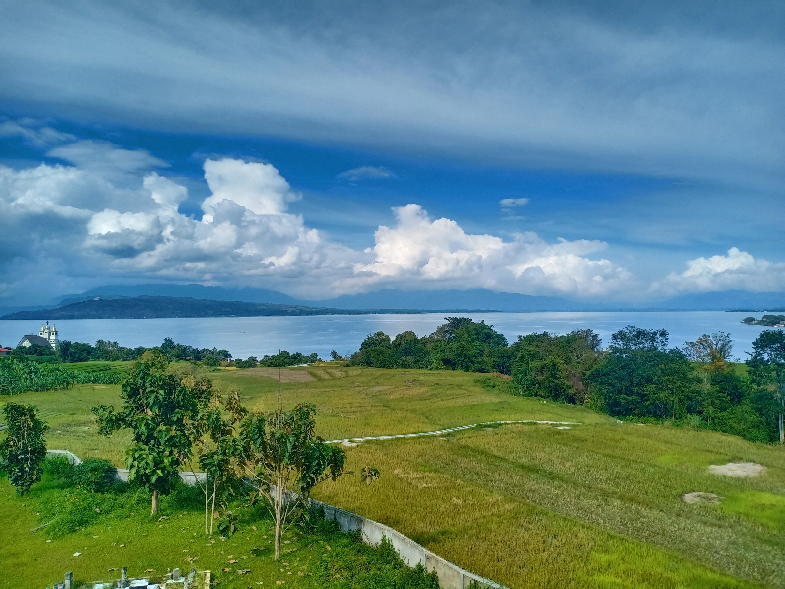
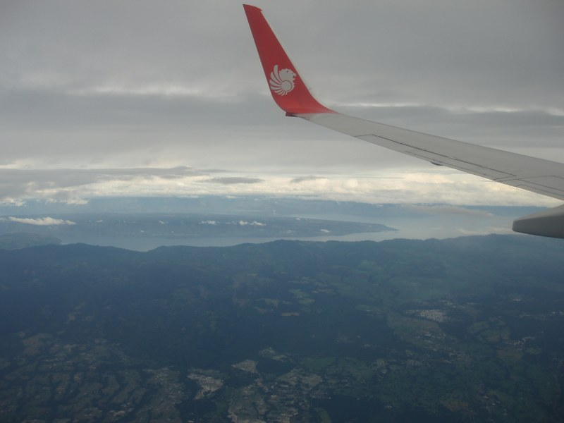
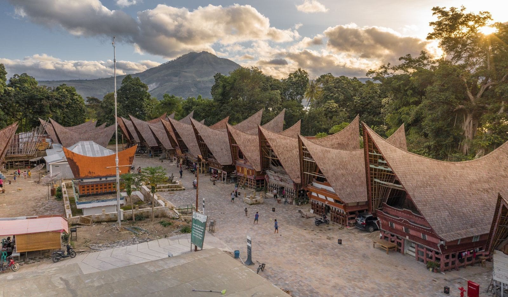
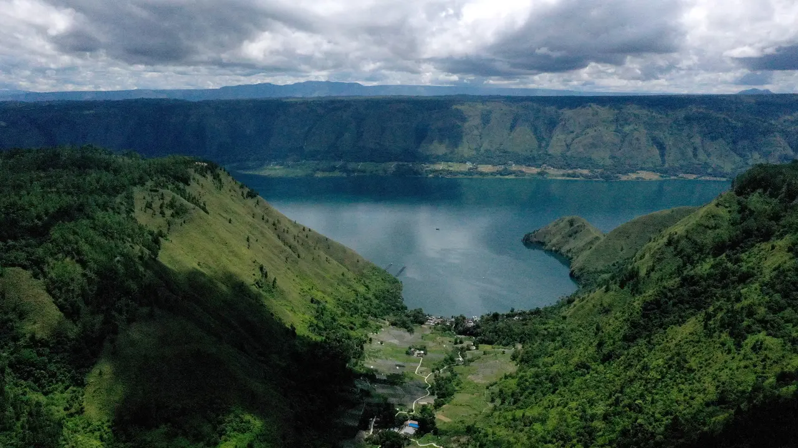

Sejarah

Danau Toba merupakan adalah danau terbesar di Indonesia sekaligus danau vulkanik terbesar di dunia.
Danau Toba terbentuk sebagai akibat dari letusan gunung berapi super masif berkekuatan VEI 8 sekitar
69.000 sampai 77.000 tahun yang lalu yang memicu perubahan iklim global. Metode penanggalan terkini
yang berakurat menetapkan letusan tersebut terjadi sekitar 74.000 tahun yang lalu.Letusan ini merupakan
letusan eksplosif terbesar di Bumi dalam 25 juta tahun terakhir. Menurut teori bencana Toba, letusan ini
berdampak besar bagi populasi manusia di seluruh dunia; dampak letusan menewaskan sebagian besar manusia
yang hidup waktu itu dan diyakini menyebabkan penyusutan populasi di Afrika Timur-Tengah dan India sehingga
memengaruhi genetika populasi manusia di seluruh dunia sampai sekarang.
Para ilmuwan sepakat bahwa letusan Toba memicu musim dingin vulkanik yang menyebabkan jatuhnya suhu dunia
antara 3 hingga 5 °C (5,4 hingga 9,0 °F), dan hingga 15 °C (27 °F) di daerah lintang atas. Penelitian lanjutan
di Danau Malawi, Afrika Timur, menemukan endapan debu letusan Toba, tetapi tidak menemukan bukti perubahan
iklim besar di Afrika Timur.
Geologi

Kompleks kaldera Toba di Sumatera Utara merupakan bagian dari Pegunungan Bukit Barisan. Kaldera Toba merupakan
kaldera dengan letusan terbaru dari zaman kuarter dengan ukuran panjang 100 km dan lebar 30 km serta merupakan
kaldera termuda keempat di dunia. Diperkirakan terdapat 2.800 km3 material piroklastik dense-rock
equivalent (DRE) yang dikenal sebagai tuff Toba Termuda (Youngest Toba Tuff, YTT) dan dikeluarkan lewat sebuah
letusan yang menjadi salah satu letusan gunung api terbesar dalam sejarah geologi Bumi baru-baru ini. Dua buah
setengah kubah kebangkitan muncul setelah letusan yang kini menjadi Pulau Samosir dan Blok Uluan, dipisahkan oleh
sebuah graben membujur yang menjadi Selat Latung. Setidaknya terdapat empat kerucut vulkanik, empat gunung api
strato, dan tiga kawah yang dapat diamati di dan di sekitar Danau Toba. Salah satu kerucut yaitu Kerucut Tanduk
benua terletak di sisi barat laut kaldera dan hanya ditumbuhi oleh vegetasi berkepadatan rendah yang menunjukkan
bahwa peristiwa pembentukannya relatif baru. Di sebelah barat danau, terdapat Dolok Pusubukit masih aktif
mengeluarkan solfatara.
Penduduk

Sebagian besar penduduk yang tinggal di sekitar Danau Toba adalah suku Batak. Rumah tradisional Batak dapat
dikenali dari bentuk atapnya (ujungnya melengkung ke atas seperti perahu) dan warna cerah.
Penduduk sekitar juga banyak menggantungkan hidup dengan mengembangkan perikanan air tawar. Dulu, wajah Desa
Haranggaol, Kecamatan Haranggaol Horison yang dikenal sebagai tujuan wisata di Simalungun menjadi sentra ikan
air tawar. Di sana, menurut sebuah laporan, belasan truk yang mengangkut puluhan ton ikan mas dan nila
mondar-mandir di jalan desa.
Flora dan Fauna

Flora di danau ini meliputi berbagai jenis fitoplankton, makrofita kecil, makrofita mengambang, dan makrofita
terbenam, sedangkan daratan sekitarnya ditutupi hutan hujan, termasuk jenis hutan pinus tropis Sumatra di daerah
pegunungan yang lebih tinggi.
Fauna di danau ini meliputi beberapa spesies zooplankton dan hewan bentos. Karena danau ini oligotrof (tidak kaya
nutrien), ikan aslinya tergolong langka. Hanya ada dua ikan endemik di danau ini, yaitu Rasbora tobana (bisa disebut
hampir endemik karena juga ditemukan di sungai-sungai yang bermuara di danau ini) dan Neolissochilus thienemanni,
biasa disebut ikan Batak. Spesies yang disebutkan terakhir itu terancam oleh deforestasi (penyebab siltasi), polusi,
perubahan ketinggian air, dan spesies ikan baru yang didatangkan ke danau ini.